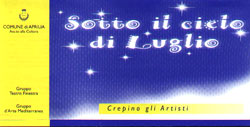

|  |
CREPINO GLI ARTISTI
APRILIA 9 -26 LUGLIO 1998
CENTRO POLIVALENTE VIA GIUSTINIANO
PROGRAMMA
9 LUGLIO 21,30
CREPINO GLI ARTISTI
Gruppo D’arte Mediterranea
STORIE DI LADRI, GIULLARI, CANZONI di Dario Fo. Regia di Ermanno Iencinella
10 LUGLIO 21,30
Ass. Chitarristica Apriliana
PAOLO BONIFANTI BAND
Rock blues concerto
Paolo Bonifanti (Voce, Chitarra), Germano Jori (Voce, Basso), Andrea Costanzo (Batteria)
13 LUGLIO 21,30
Ass. Chitarristica Apriliana
MANDOLINI DEL COMPLESSO ALMA LATINA
Serata Napoletana
Mandolini: Sergio Trojse, Guglielmo Ara, Fabrizio Bianchini, Valdimiro Buzi
Mandola e Voce: Maria Ausilia D’Antona
Chitarra: Corrado Tojse
14 LUGLIO 21,30
QUERIDA PRESENCIA
Funky-latin concerto
Gloria Pistoleri (Voce), Roberto Ferrara (Piano elettrico), Mauro Maceratesi (Percussioni)
15 LUGLIO 21,30
Cinema
APRILE di Nanni Moretti
16 LUGLIO 21,30
CREPINO GLI ARTISTI
Gruppo D’arte Mediterranea
SC’VÈIK IL BUON SOLDATO da J. Hasek.
Riduzione , adattamento e regia di Gianfranco Mazzoni
17 LUGLIO 21,30
Cinema
THE GAME di David Fincher
18 LUGLIO 21,30
CREPINO GLI ARTISTI
Ass. Culturale ATM
RIDERE, RIDENDO E CANTANDO CHE MALE VI FÒ. Testo e regia di Gianfranco Mazzoni
19 LUGLIO 21,30
CREPINO GLI ARTISTI
Cinema
QUALCOSA È CAMBIATO di James L. Brooks
20 LUGLIO 21,30
CREPINO GLI ARTISTI
LE IMMAGINI
Blues Concerto: C. Paduch (Voce, Chitarra), M. Mantovani (Voce, Basso), R. De Vito (Voce, Chitarra), T. Mantovani (Tastiere, Voce), A. Brignone (Batteria)
21 LUGLIO 21,30
CREPINO GLI ARTISTI
Ass. Senza confine
GENTINCAMMINO
Suoni, Colori, Sapori sulle strade del mondo
TABALA Afro World Music
22 LUGLIO 21,30
CREPINO GLI ARTISTI
Luciana Littizzetto
BELLA DI NOTTE E RACCHIA DI GIORNO
23 LUGLIO 21,30
CREPINO GLI ARTISTI
Comp. Di Beato e Angelica
LA LOCANDIERA di Carlo Goldoni. Regia di Marinella Anaclerio.
24 LUGLIO 21,30
Cinema
HARRY A PEZZY di Woody Allen
25 LUGLIO 21,30
Cinema
OVOSODO di P. Virzì
26 LUGLIO 21,30
Comp. Teatrale T. Fiorilli
PARLEZ-MOI D’AMOUR
Passioni e musica di un tempo di guerra di e con Gianni De Feo.
Pianoforte: Stefano De Feo
Violino: Daniele Trevisiol
Fisarmonica: Fabio Raspa